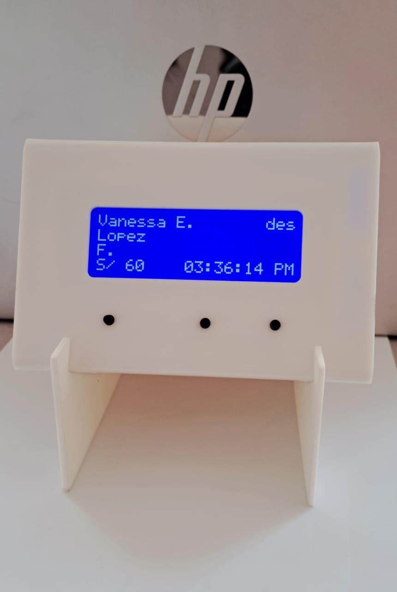

Valida tus cobros móviles al instante y vende más seguro
¿Qué es VeryPago?
VeryPago es un visor inteligente que muestra en pantalla y con sonido tus cobros recibidos por transferencias móviles. Diseñado para comerciantes que necesitan rapidez, orden y seguridad en cada venta.

¿Qué problema soluciona?
VeryPago evita fraudes, pantallazos falsos, errores de cobro, y elimina la necesidad de estar revisando el celular mientras atiendes a tus clientes. Perfecto para mercados, ferias, bodegas y negocios de alta rotación.
¿Cómo funciona?
Instalamos VeryPago en tu negocio y lo conectamos con tu app de cobros.
Recibes alertas sonoras y visuales de cada pago recibido.
Confirmas cobros en tiempo real, rápido y seguro.
Ventajas de usar VeryPago
✅ Validación de pagos en tiempo real.
✅ Historial de últimos 50 pagos almacenados.
✅ Evita fraudes y errores comunes.
✅ Servicio prepago: sin contratos largos.
✅ Instalación en 10 minutos y soporte técnico ágil.
Planes y precios
Plan Básico
Activación: S/ 100
Servicio: S/ 1 diario (prepago mensual)
Equipo en calidad de préstamo
Plan Premium
Activación: S/ 150
Servicio: S/ 1.50 diario
Incluye soporte prioritario, reemplazo express, y reportes de cobros.
Preguntas frecuentes
¿Qué pasa si no recargo? - El servicio se pausa hasta que realices una nueva recarga.
¿El equipo es mío? - VeryPago te presta el dispositivo mientras utilices el servicio.
¿Puedo cancelar? - Sí, solo dejas de recargar y devuelves el equipo.
¿Qué incluye el soporte? - Asistencia técnica, actualización de sistema y reemplazo en caso de falla técnica (según plan).